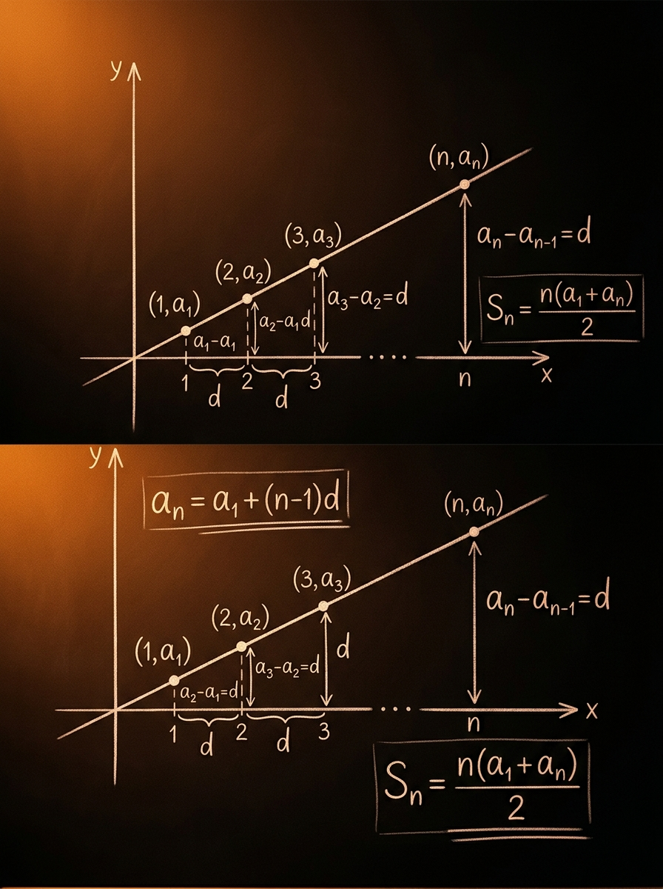

To je glavna ušteda vremena u ispitnim zadacima.
Matoteka znanje · Lekcija 55
Kategorija IX · Nizovi i redovi
Aritmetički niz i ritam stalne razlike
Aritmetički niz deluje jednostavno dok ga gledaš kao listu brojeva. Postaje mnogo moćniji kada ga vidiš kao pravilo: svaki sledeći član nastaje istim pomakom. Upravo taj stalni pomak omogućava da brzo računaš bilo koji član, zbir prvih \(n\) članova i da tekstualne uslove prevodiš u linearne jednačine koje su veoma česte na prijemnom.
Prvi član nema nijedan skok od sebe do sebe.
To je deo gde se proverava razumevanje, a ne samo mehanično računanje.

Zašto učiš ovo
Zašto je ova lekcija važna
Aritmetički niz je jedna od prvih tema u kojoj isti obrazac vidiš kroz više lica: kao listu brojeva, kao formulu za član, kao zbir i kao linearnu zavisnost od indeksa. Na prijemnom se baš zato često koristi kao test razumevanja. Ako znaš da čitaš obrazac, rešavaćeš brže i zadatke iz algebre, analitičke geometrije i funkcija.
Red, obrazac, linearno razmišljanje
1. Stalna promena
Uči te da prepoznaš isti pomak
Kada je razlika između susednih članova stalna, nema potrebe da pišeš mnogo članova. Dovoljno je da znaš prvi član i korak \(d\). To je mentalni model koji štedi vreme.
2. Veza sa linearnom funkcijom
Tačke \((n,a_n)\) leže na pravoj
Ako posmatraš indeks \(n\) kao promenljivu, opšti član je linearna formula. Zato aritmetički niz nije izolovana tema, nego uvod u funkcionalno razmišljanje.
3. Tipičan prijemni alat
Od teksta do sistema jednačina
U zadacima se često zadaju odnosi između nekoliko članova niza. Tada ne traže da znaš formulu napamet, nego da od uslova napraviš sistem za \(a_1\) i \(d\). To je centralna ispitna veština.
Osnova
Definicija i intuicija
Pre formule, važno je da precizno znaš šta je niz. Niz je uređeni spisak brojeva: redosled članova je važan. Aritmetički niz je poseban slučaj u kome se od svakog člana do sledećeg stiže istom razlikom.
Niz nije skup
Formalno
Kako se definiše niz
Niz možeš da posmatraš kao funkciju koja svakom prirodnom broju \(n\) pridružuje jedan realan broj \(a_n\). Zapisujemo
\[ a:\mathbb{N}\to\mathbb{R}, \quad n \mapsto a_n. \]
U praksi to čitaš ovako: prvom indeksu odgovara prvi član \(a_1\), drugom drugi član \(a_2\), i tako dalje.
Ključna osobina
Šta znači da je niz aritmetički
Niz je aritmetički ako je razlika svakog sledećeg i prethodnog člana stalna:
\[ a_{n+1}-a_n=d, \quad \text{za svako } n\in\mathbb{N}. \]
Broj \(d\) zove se razlika niza. Ako je \(d>0\), niz raste. Ako je \(d<0\), niz opada. Ako je \(d=0\), svi članovi su jednaki.
Primer koji jeste
\(3, 7, 11, 15, \ldots\)
Razlike su \(+4, +4, +4\). Dakle, ovo je aritmetički niz sa \(a_1=3\) i \(d=4\).
Stalna razlika = aritmetički niz
Primer koji nije
\(2, 4, 8, 16, \ldots\)
Razlike su \(2, 4, 8\), pa nisu jednake. Ovo je geometrijski obrazac, ne aritmetički.
Ne gledaj samo da se brojevi povećavaju
Intuicija
Misli u skokovima
Najbolje pitanje koje možeš sebi da postaviš jeste: Koliki je isti skok od jednog člana do sledećeg? Kada to vidiš, ostatak zadatka se obično sam otvara.
Mikro-provera: da li je niz \(10, 6, 2, -2, \ldots\) aritmetički?
Jeste. Razlike su \(6-10=-4\), \(2-6=-4\), \(-2-2=-4\). Dakle, \(d=-4\).
Važna poruka: aritmetički niz ne mora da raste. Dovoljno je da je razlika stalna, čak i kada je negativna.
Prva velika formula
Opšti član: kako do bilo kog člana bez pisanja celog niza
Na prijemnom skoro nikada nemaš luksuz da ispisuješ mnogo članova. Zato moraš da razumeš logiku opšteg člana: od prvog do \(n\)-tog člana napraviš tačno \(n-1\) jednakih skokova po \(d\).
Broj skokova je \(n-1\)
Građenje formule
Korak po korak
\[ a_1=a_1 \]
\[ a_2=a_1+d \]
\[ a_3=a_1+2d \]
\[ a_4=a_1+3d \]
Vidiš obrazac: indeks raste za \(1\), a broj dodatih razlika raste za \(1\). Zato za \(n\)-ti član važi:
\[ a_n=a_1+(n-1)d. \]
Najvažnije tumačenje
Zašto nije \(a_1+nd\)
Zato što do prvog člana ne praviš nijedan skok. Ako tražiš \(a_1\), formula mora da da baš \(a_1\):
\[ a_1=a_1+(1-1)d=a_1. \]
Ovo je jednostavna samoprovera. Kad god sumnjaš u formulu, ubaci \(n=1\). Ako ne dobiješ prvi član, nešto je pogrešno.
Brza provera: uvrsti \(n=1\)
Pedagoški trik koji pomaže: ne pamti formulu napamet bez slike. Zamisli da stojiš na \(a_1\)
i ideš ka \(a_n\). Pitanje je samo: koliko puta dodaješ isti korak \(d\)? Odgovor je: \(n-1\) puta.
Primer 1
Ako je \(a_1=5\) i \(d=3\), nađi \(a_8\)
\[ a_8=5+(8-1)\cdot 3=5+21=26. \]
Ne pišeš svih osam članova. Odmah ideš na formulu.
Primer 2
Ako je \(a_1=12\) i \(d=-2\), nađi \(a_{10}\)
\[ a_{10}=12+(10-1)(-2)=12-18=-6. \]
Negativna razlika znači da se svaki sledeći član smanjuje.
Primer 3
Kad znaš dva člana
Ako su poznati \(a_p\) i \(a_q\), pišeš:
\[ a_p=a_1+(p-1)d, \qquad a_q=a_1+(q-1)d. \]
To odmah daje linearni sistem za \(a_1\) i \(d\).
Mikro-provera: u nizu je \(a_1=-3\) i \(d=4\). Koliko je \(a_7\)?
Primeni formulu \(a_n=a_1+(n-1)d\):
\[ a_7=-3+(7-1)\cdot 4=-3+24=21. \]
Greška koju učenici često prave je da napišu \(-3+7\cdot 4\), ali to bi značilo da si napravio sedam skokova umesto šest.
Druga velika formula
Suma prvih \(n\) članova: ne sabiraš ručno, nego pametno
Kada u zadatku traže zbir više uzastopnih članova, poenta nije da ih sve izračunaš pojedinačno. Aritmetički niz ima simetriju: prvi i poslednji, drugi i pretposlednji daju isti zbir. Iz te ideje nastaje formula za \(S_n\).
Parovi sa istim zbirom
Izvođenje
Gaussov trik u nizu
\[ S_n=a_1+a_2+\cdots+a_n \]
\[ S_n=a_n+a_{n-1}+\cdots+a_1 \]
\[ 2S_n=(a_1+a_n)+(a_2+a_{n-1})+\cdots+(a_n+a_1) \]
Svaki par daje isti zbir \(a_1+a_n\), a takvih parova ima \(n\). Zato:
\[ 2S_n=n(a_1+a_n) \]
\[ S_n=\frac{n(a_1+a_n)}{2}. \]
Drugi oblik
Kada poslednji član nije poznat
Ako ne znaš \(a_n\), zameni ga preko opšteg člana:
\[ a_n=a_1+(n-1)d. \]
\[ S_n=\frac{n}{2}\left(a_1+a_1+(n-1)d\right). \]
\[ S_n=\frac{n}{2}\left(2a_1+(n-1)d\right). \]
Ova forma je odlična kada su dati \(a_1\), \(d\) i \(n\), a poslednji član ne želiš posebno da računaš.
Primer 1
Nađi \(S_{12}\) za \(a_1=4\), \(d=3\)
\[ a_{12}=4+11\cdot 3=37 \]
\[ S_{12}=\frac{12(4+37)}{2}=6\cdot 41=246. \]
Možeš i direktno sa \(S_n=\frac{n}{2}(2a_1+(n-1)d)\), dobijaš isti rezultat.
Primer 2
Opadajući niz
Za \(a_1=20\), \(d=-2\), \(n=8\):
\[ S_8=\frac{8}{2}\left(2\cdot 20+7\cdot (-2)\right)=4(40-14)=104. \]
I kod opadajućih nizova ista formula radi bez ikakve izmene.
Važan uvid
Zbir je broj parova puta zbir jednog para
Ako zapamtiš samo ideju, formulu možeš i sam da rekonstruišeš. To je sigurnije nego slepo pamćenje.
Razumevanje > puko memorisanje
Mikro-provera: koji oblik sume je najbrži kada znaš \(a_1=7\), \(d=5\), \(n=20\)?
Najprirodnije je koristiti oblik sa \(a_1\), \(d\) i \(n\):
\[ S_{20}=\frac{20}{2}\left(2\cdot 7+19\cdot 5\right). \]
Naravno, možeš prvo naći \(a_{20}\), ali to je jedan nepotreban korak više. Na prijemnom uvek traži kraći put.
Ključ za tekstualne zadatke
Srednji član, aritmetičke sredine i sistemi uslova
Mnogi zadaci na prijemnom nisu direktni. Ne pitaju te samo da izračunaš \(a_n\), nego da iz uslova pronađeš parametre niza ili nepoznate brojeve koji čine aritmetički niz. Tada je svojstvo srednjeg člana jedno od najjačih oruđa.
Aritmetička sredina u srcu niza
Svojstvo srednjeg člana
Susedi su simetrični oko sredine
Za svako \(k\) za koje postoje susedi važi:
\[ a_k=\frac{a_{k-1}+a_{k+1}}{2} \]
\[ 2a_k=a_{k-1}+a_{k+1}. \]
To znači da je srednji član aritmetička sredina susednih članova. Nije slučajno što se baš tako zove.
Tri broja u progresiji
Najpraktičniji zapis
Ako tri broja čine aritmetički niz, najpametnije ih pišeš kao:
\[ x-d,\quad x,\quad x+d. \]
Tada je srednji broj odmah \(x\), a cela priča se svodi na dve nepoznate umesto tri.
Ubacivanje sredina
Kada između dva broja umećeš nove članove
Ako između \(A\) i \(B\) ubacuješ \(m\) aritmetičkih sredina, onda dobijaš niz od ukupno \(m+2\) članova. Razlika je:
\[ d=\frac{B-A}{m+1}. \]
Posle toga redom dodaješ \(d\) i dobijaš sve umetnute članove.
Sistemi uslova
Kada zadatak daje više informacija
Ako znaš dva različita člana, ili zbir nekih članova i još jednu relaciju, pišeš jednačine preko \(a_1\) i \(d\). To su obično linearne jednačine, pa ih rešavaš metodom sabiranja ili oduzimanja.
Brz primer
Da li su \(7\), \(x\), \(19\) u aritmetičkom nizu?
\[ x=\frac{7+19}{2}=13. \]
Dakle, jedino \(x=13\) daje aritmetički niz \(7,13,19\).
Ubacivanje sredina
Ubaci tri aritmetičke sredine između \(5\) i \(21\)
\[ d=\frac{21-5}{3+1}=4. \]
Dobijeni niz je \(5,9,13,17,21\), pa su umetnute sredine \(9,13,17\).
Mikro-provera: zašto su brojevi \(x-4\), \(x\), \(x+4\) uvek u aritmetičkom nizu?
Razlika između drugog i prvog broja je \(x-(x-4)=4\), a razlika između trećeg i drugog je \((x+4)-x=4\).
Pošto su razlike jednake, brojevi su uvek u aritmetičkom nizu. Ovaj zapis je zato veoma zgodan u zadacima.
Interaktivna laboratorija
Pomeri parametre i vidi niz kao pravu
U ovoj laboratoriji menjaš prvi član \(a_1\), razliku \(d\), broj posmatranih članova i fokusirani indeks. Canvas prikazuje tačke \((k,a_k)\). Kada menjaš \(d\), menja se nagib prave. Kada pomeraš fokusirani član, vidiš da je srednji član aritmetička sredina suseda.
Vizuelna provera formule
Menja početnu visinu svih tačaka.
Pozitivno \(d\) daje rast, negativno opadanje, a nula konstantan niz.
Menja koliko članova posmatraš i za koliko članova računaš sumu.
Ističe \(a_k\) i njegove susede radi provere svojstva srednjeg člana.
Kako da koristiš ovaj deo
Prvo pomeraj samo \(d\) i prati kako se nagib menja. Zatim pomeraj fokusirani indeks \(k\) i proveravaj jednačinu \(2a_k=a_{k-1}+a_{k+1}\).
Na slici su indeksi na horizontalnoj osi, a vrednosti članova niza na vertikalnoj osi. Kod aritmetičkog niza sve tačke padaju na jednu pravu.
Vođeni primeri
Kako se rešavaju tipični zadaci korak po korak
Ovde je cilj da vidiš obrazac razmišljanja, ne samo finalan broj. Obrati pažnju na to kada direktno koristiš formulu, a kada prvo moraš da pronađeš \(a_1\) i \(d\).
Strategija ispred računanja
Primer 1
Nađi \(a_{15}\) i \(S_{15}\) ako je \(a_1=4\), \(d=3\)
- Za opšti član koristi \(a_n=a_1+(n-1)d\).
- Uvrsti \(n=15\): \(a_{15}=4+14\cdot 3=46\).
- Za sumu je najlakše koristiti \(S_n=\frac{n(a_1+a_n)}{2}\).
- Dobijaš \(S_{15}=\frac{15(4+46)}{2}=\frac{15\cdot 50}{2}=375\).
\[ a_{15}=46, \qquad S_{15}=375. \]
Pouka: kada možeš brzo do poslednjeg člana, formula \(\frac{n(a_1+a_n)}{2}\) je veoma pregledna.
Primer 2
Poznato je \(a_4=14\) i \(a_{10}=32\). Odredi \(a_1\) i \(d\)
- Napiši oba uslova preko \(a_1\) i \(d\): \[ a_4=a_1+3d=14, \qquad a_{10}=a_1+9d=32. \]
- Oduzmi jednačine: \(6d=18\), pa je \(d=3\).
- Vrati u prvu jednačinu: \(a_1+9=14\), pa je \(a_1=5\).
\[ a_1=5, \qquad d=3. \]
Pouka: kada znaš dva člana, razlika indeksa odmah govori koliko si puta dodao \(d\).
Primer 3
Odredi \(x\) tako da brojevi \(x+1\), \(2x-3\), \(3x-7\) budu uzastopni članovi aritmetičkog niza
- Za tri uzastopna člana važi da je srednji član aritmetička sredina krajnjih.
- Zato pišeš: \[ 2(2x-3)=(x+1)+(3x-7). \]
- Sredi jednačinu: \(4x-6=4x-6\).
Dobijaš identitet, što znači da je uslov ispunjen za svako realno \(x\).
\[ (2x-3)-(x+1)=x-4 \]
\[ (3x-7)-(2x-3)=x-4. \]
Pouka: ponekad zadatak krije opšti obrazac, a ne jednu konkretnu vrednost.
Primer 4
Ako je \(S_5=45\) i \(a_5=13\), odredi niz
- Koristi formulu za sumu: \[ S_5=\frac{5(a_1+a_5)}{2}=45. \]
- Pošto je \(a_5=13\), sledi \(\frac{5(a_1+13)}{2}=45\), pa je \(a_1+13=18\), odnosno \(a_1=5\).
- Zatim koristi opšti član za peti član: \[ a_5=a_1+4d=13. \]
- Dobijaš \(5+4d=13\), pa je \(d=2\).
\[ a_1=5,\qquad d=2,\qquad a_n=5+2(n-1). \]
Pouka: u zadatku često kombinuješ formulu za član i formulu za sumu.
Pregled za ponavljanje
Ključne formule i obrasci
Ovo je zbir onoga što treba da znaš da prizoveš pod pritiskom ispita. Ali ove formule vrede samo ako umeš da prepoznaš kada koja treba da se upotrebi.
Formula + značenje
Definicija
Stalna razlika
\[ a_{n+1}-a_n=d. \]
Ovo je najčistija definicija aritmetičkog niza.
Opšti član
Brz pristup bilo kom članu
\[ a_n=a_1+(n-1)d. \]
Koristi kada znaš \(a_1\), \(d\) i indeks traženog člana.
Suma
Kada znaš prvi i poslednji član
\[ S_n=\frac{n(a_1+a_n)}{2}. \]
Najpregledniji oblik kada je poslednji član poznat ili se lako dobija.
Suma preko \(d\)
Kada poslednji član nije dat
\[ S_n=\frac{n}{2}\left(2a_1+(n-1)d\right). \]
Odličan oblik za direktno računanje iz početnih podataka.
Srednji član
Provera i skraćivanje zadataka
\[ a_k=\frac{a_{k-1}+a_{k+1}}{2}. \]
Koristi za tri uzastopna člana i u zadacima sa aritmetičkim sredinama.
Ubacivanje sredina
Kada umećeš \(m\) članova između dva broja
\[ d=\frac{B-A}{m+1}. \]
Posle toga samo dodaješ \(d\) redom od \(A\) do \(B\).
Na šta da paziš
Česte greške učenika
Ove greške nisu slučajne. Nastaju kada učenik mehanički pamti formule, a ne vidi obrazac. Ako ih prepoznaš na vreme, napravićeš veliki pomak u sigurnosti rada.
Greške koje obaraju lake zadatke
Greška 1
\(a_n=a_1+nd\) umesto \(a_1+(n-1)d\)
Ovo je najčešća greška. Lek: proveri formulu za \(n=1\). Ako ne dobiješ \(a_1\), formula nije dobra.
Greška 2
Mešanje negativne razlike sa apsolutnom vrednošću
Ako je \(d=-3\), svaki sledeći član dobijaš dodavanjem \(-3\), a ne dodavanjem \(3\). Ne popravljaj znak na silu.
Greška 3
Pisanje tri broja kao \(x, x+d, x+2d\) kada je srednji prirodniji
U nekim zadacima je bolje pisati \(x-d, x, x+d\), jer srednji član odmah postaje aritmetička sredina.
Greška 4
Računanje sume ručno i kad nije potrebno
Ako niz ima mnogo članova, ručno sabiranje je poziv na grešku. Suma postoji baš zato da skrati posao.
Greška 5
Ne čitanje indeksa pažljivo
Razlika između \(a_4\) i \(a_{10}\) nije \(10-4=5\) skokova, nego \(6\). Uvek računaj broj prelaza između indeksa.
Greška 6
Zaboravljanje da zbir može dati dodatnu jednačinu
Ako zadatak daje \(S_n\), to nije sporedan podatak. Često je baš on druga jednačina koja ti nedostaje za sistem.
Ispitna strategija
Veza sa prijemnim zadacima
Na prijemnom se aritmetički niz retko javlja kao potpuno izdvojena tema. Češće je upakovan u priču, sistem uslova ili kombinovan sa drugim oblastima. Zato je važnije da znaš kako da prepoznaš obrazac nego da odmah trčiš na račun.
Šta proveriti pod pritiskom
Tip 1
Direktni račun člana ili sume
Ovde je posao jednostavan: prepoznaj šta je dato među \(a_1\), \(d\), \(n\), \(a_n\), \(S_n\) i izaberi najkraću formulu.
Tip 2
Dva ili više uslova o različitim članovima
To su zadaci za sistem: napiši svaki uslov preko \(a_1\) i \(d\), pa rešavaj linearno bez improvizacije.
Tip 3
Tri broja u progresiji
Često se ovo javlja maskirano kroz brojeve, parametre ili čak korene neke jednačine. Odmah se seti zapisa \(x-d, x, x+d\).
Tip 4
Ubacivanje sredina
Prebroj koliko ukupno članova dobijaš. To određuje koliko puta razliku dodaješ od prvog do poslednjeg broja.
Prijemni kontrolni spisak:
1. Šta je poznato: \(a_1\), \(d\), \(n\), \(a_n\), \(S_n\)?
2. Da li je zadatak direktan ili traži sistem?
3. Ako su tri broja u nizu, da li je najpametniji zapis \(x-d, x, x+d\)?
4. Da li brža formula koristi \(a_n\) ili izraz preko \(d\)?
5. Jesi li proverio znak razlike i broj skokova?
2. Da li je zadatak direktan ili traži sistem?
3. Ako su tri broja u nizu, da li je najpametniji zapis \(x-d, x, x+d\)?
4. Da li brža formula koristi \(a_n\) ili izraz preko \(d\)?
5. Jesi li proverio znak razlike i broj skokova?
Vežba
Zadaci za samostalni rad
Reši prvo bez gledanja rešenja. Tek kada zaista zapneš, otvori `details`. Tako najviše dobijaš od lekcije.
Od lakšeg ka ispitnom
Zadatak 1
Za \(a_1=4\) i \(d=3\) izračunaj \(a_{12}\)
Rešenje
\[ a_{12}=4+(12-1)\cdot 3=4+33=37. \]
Zadatak 2
Poznato je \(a_5=17\) i \(a_{12}=38\). Nađi \(a_1\) i \(d\)
Rešenje
Pišemo sistem:
\[ a_1+4d=17 \]
\[ a_1+11d=38 \]
Oduzimanjem dobijamo \(7d=21\), pa je \(d=3\). Zatim je \(a_1=17-12=5\).
Zadatak 3
Ubaci pet aritmetičkih sredina između \(6\) i \(30\)
Rešenje
Pošto umećeš \(5\) sredina, imaš ukupno \(7\) članova, odnosno \(6\) skokova.
\[ d=\frac{30-6}{5+1}=4. \]
Niz je \(6,10,14,18,22,26,30\), pa su umetnute sredine \(10,14,18,22,26\).
Zadatak 4
Odredi \(x\) tako da brojevi \(x+1\), \(2x-3\), \(3x-9\) budu uzastopni članovi aritmetičkog niza
Rešenje
Koristi srednji član:
\[ 2(2x-3)=(x+1)+(3x-9). \]
Sredi: \(4x-6=4x-8\), što je nemoguće. Dakle, takvo \(x\) ne postoji.
Brza provera preko razlika takođe daje neusaglašene rezultate: \(x-4\) i \(x-6\).
Zadatak 5
Za niz sa \(a_1=3\) i \(d=2\) odredi \(n\) ako je \(S_n=80\)
Rešenje
Koristi formulu za sumu:
\[ 80=\frac{n}{2}\left(2\cdot 3+(n-1)\cdot 2\right) \]
\[ 80=\frac{n}{2}(6+2n-2)=\frac{n}{2}(2n+4)=n(n+2). \]
Dobijamo jednačinu \(n^2+2n-80=0\), odnosno \((n-8)(n+10)=0\).
Pošto je \(n\) prirodan broj, sledi \(n=8\).
Ključni uvid
Aritmetički niz je linearna priča obučena u niz brojeva
Kada vidiš aritmetički niz, nemoj razmišljati o nasumično poređanim članovima. Razmišljaj o jednoj pravoj: svaki sledeći član dolazi istim pomakom. Zbog toga su i opšti član, i suma, i srednji član logične posledice jedne iste ideje.
Na kraju lekcije
Završni rezime
Ako možeš da izgovoriš sledeće tačke bez gledanja u formulu, onda si lekciju zaista usvojio.
Šta mora da ostane u glavi
1
Definicija
Aritmetički niz ima stalnu razliku \(d\) između svakih susednih članova.
2
Opšti član
\(a_n=a_1+(n-1)d\), jer od prvog do \(n\)-tog člana praviš \(n-1\) skokova.
3
Suma
\(S_n=\frac{n(a_1+a_n)}{2}\) ili \(\frac{n}{2}(2a_1+(n-1)d)\), zavisno od datih podataka.
4
Srednji član
Srednji član je aritmetička sredina suseda: \(2a_k=a_{k-1}+a_{k+1}\).
5
Prijemni strategija
Iz tekstualnih uslova pravi sistem za \(a_1\) i \(d\), umesto da nagađaš članove.
6
Sledeći logičan korak
Posle ovog gradiva prirodno dolaze geometrijski niz i beskonačni geometrijski red, gde se menja ista ideja obrasca, ali sa količnikom umesto razlike.